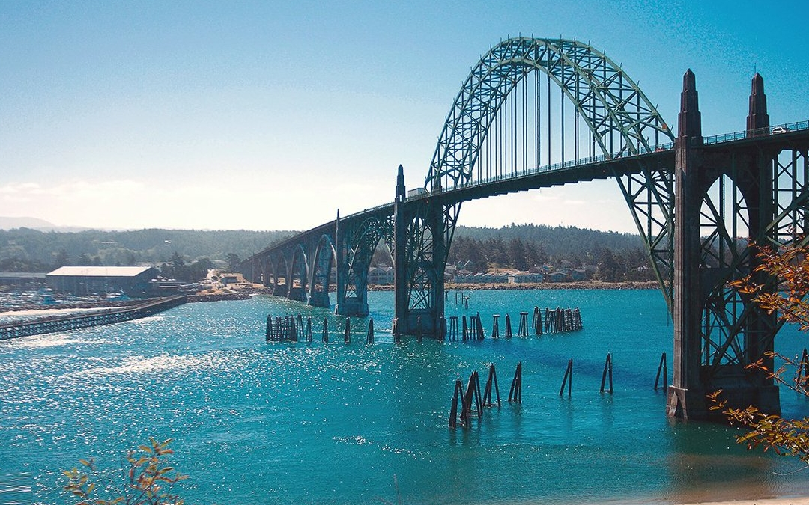
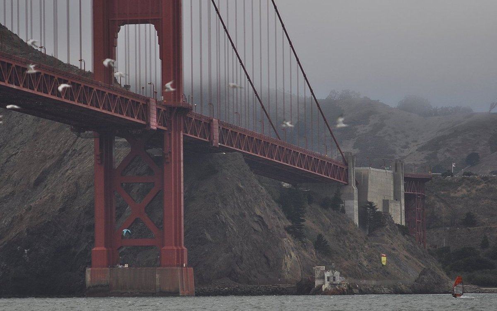
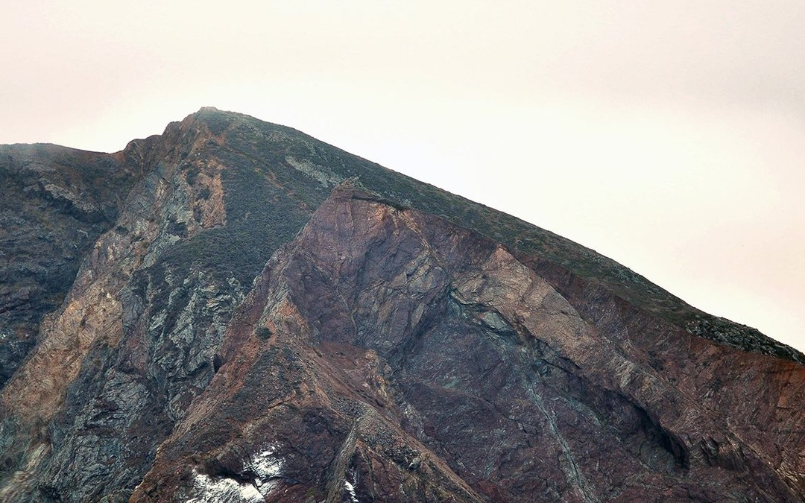
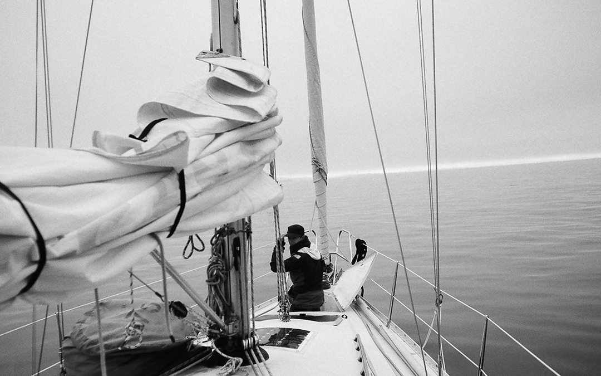

us west coast
In 2016, we sailed down the west coast of the United States. We left Canada with our friends Kim and Claudia from the sailboat Essencia, leaving in good, but grey weather. The coast was foggy too, we kept our eyes on the radar because we could not trust our eyes.
We completed our first 3-day passage, making a first stop in Newport, Oregon to wait for some bad weather to pass. The wind howled in the ocean, but we were safe in our spot. In better weather, we left, but suffered many calms and had to stop at Fort Bragg to refuel. Fort Bragg was a really fun fishing town, but the narrow river leading to it was scary to motor through. We picked apples from a local orchard, and played badminton there. Then, we aimed straight for San Francisco. We anchored in multiple places there, like in the Aquatic Park and Treasure Island. Getting to town was easy from both of these anchorages. We spent our days walking around town, working from cafes, and meeting up with friends. We stayed here for a month, before heading further south.
We started to have engine issues then, so we stopped at San Simeon Bay. The next day we sailed off anchor for the first time, to spare our engine of this task..
Our engine issues forced us to stop at San Luis Obispo. Some mechanics onshore helped us diagnose our problem from afar, and we made the repair ourselves. As it turned out, the engine was overheating because the raw water pipes were full of salt, the thermostat too was seized. We cleared the pipes and removed the thermostat, with plans to replace it once we arrived in Los Angeles. Our engine did not give us more trouble after that. The sail to Los Angeles was eventful.
We had good wind most of the way, but near LA we heard a Mayday on the radio. We followed the events for a while, and were reassured when the coastguard found the boat. We spent a few days in the biggest marina we'd ever seen: Marina Del Rey. It's there that we met the sailor who had called the MayDay. His boat had suffered a bad storm further north, and wrecked his boat. He was adrift in the water and contacted authorities. They found him, but the coastguard damaged his boat even more trying to rescue him. Then, when he was successfully towed to shore, his wife left him. Ah well... sad tales. He was trying to light a cigarette with a battery when we met him, we offered him a lighter.
Our last stop in the US was San Diego, where we spent 2 weeks, waiting for good weather to sail to Ensenada in mexico. We rowed iggy to shore everyday to Coronado Island to work from a cafe. We liked taking long bike rides from the island to the main part of town.
We loved our time here. Our favorite thing was seeing the land change as we arrived south, from the foggy, green and full foliage coast of Washington and Oregon, to the orange hills, warm weather, and arid climate of the south.